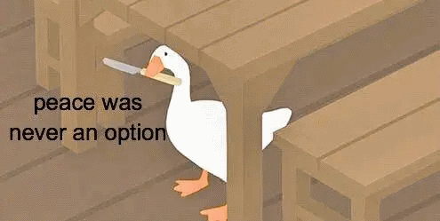

Dans cette page il y a des 🦆. Les 🦆 cachent bien leur jeu, mais ils préparent une véritable révolution. Chaque fois qu'on clique sur un 🦆, ils se multiplient.

Les 🦆 cancannent plus fort dans les villes. Des vrais manifestants !
Les 🦆 ont une meilleure vision que les humains. Ils vont vous voir venir avant !
Les 🦆 peuvent dormir avec un oeil ouvert. Toujours à l'affût !
Les 🦆 ont parfois une couleur préférée. (Souvent bleu ou vert)